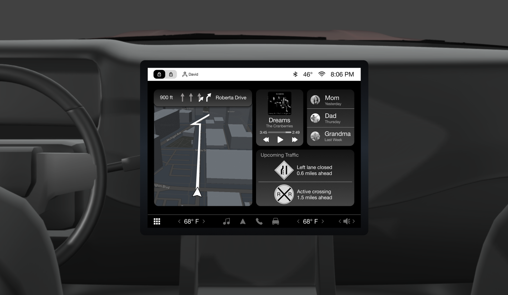
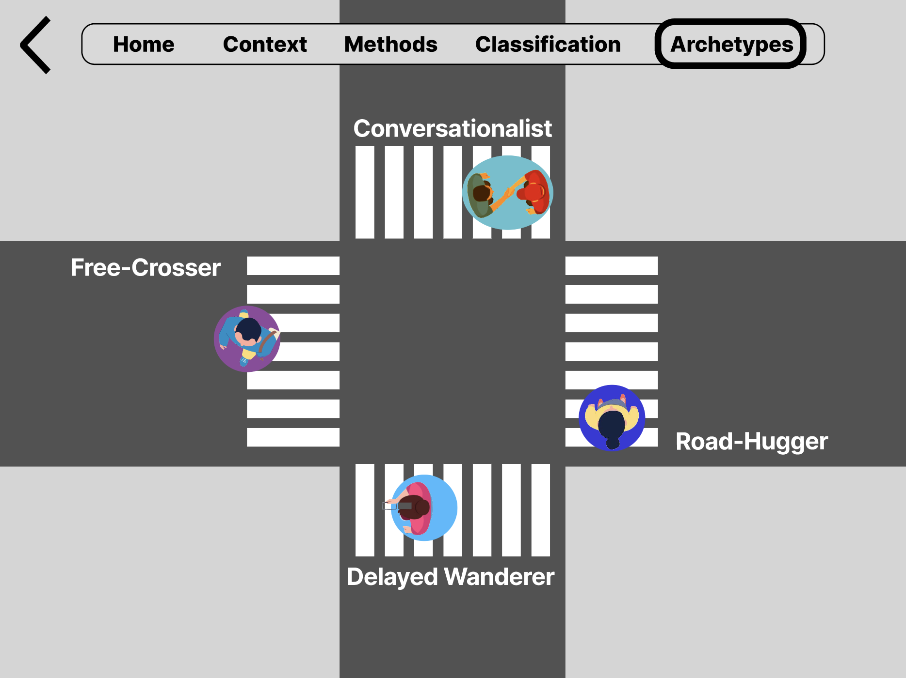
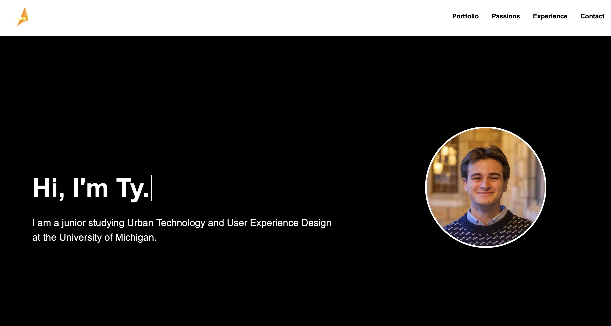
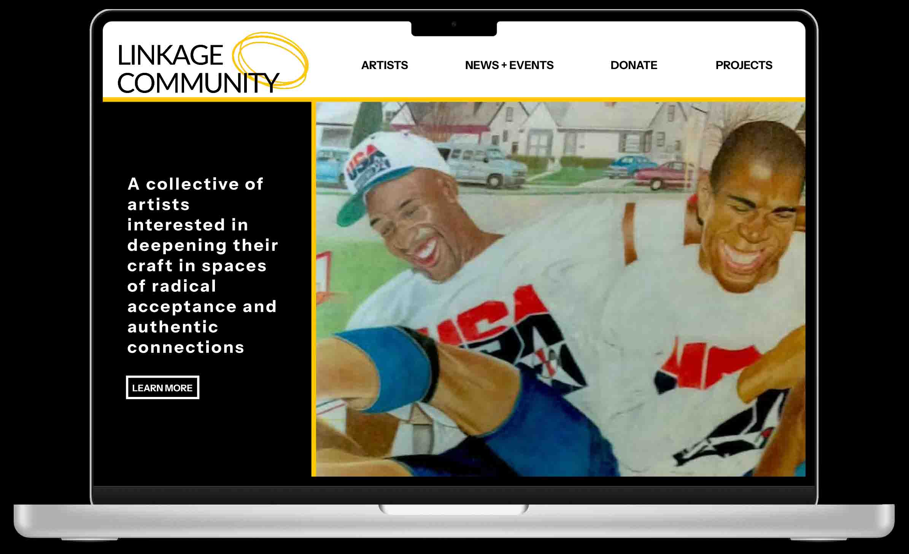
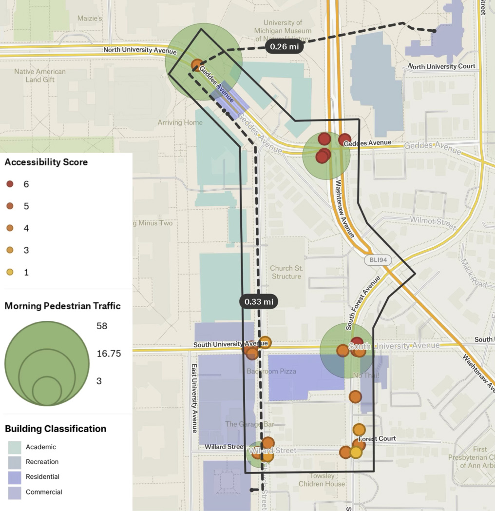
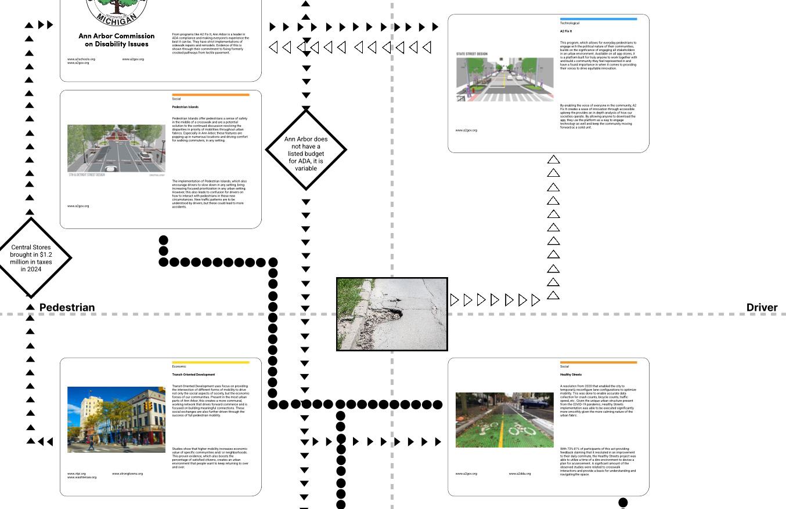

Projects

Automotive Prototyping
Using Figma, I rapidly prototyped a redesigned infotainment system for the Jeep Grand Cherokee. This solo project focused on improving driver experience through streamlined UI flows, AI-assisted feedback, and predictive vehicle awareness. By rethinking layout, hierarchy, and interaction patterns, the design creates a more intuitive and adaptive in-car experience. Click on the image to learn more!

Archetype Classifications
Utilizing Figma, this project applied ethnographic research concepts to develop and classify archetypes within a specific user group. My team focused on crosswalk waiting behavior, iterating on a classification system through methods such as affinity mapping, card sorting, and behavioral analysis. These research tools helped us translate observations into a credible and refined deliverable. Click on the image to learn more!

This Website!
Through tyjanderson.com, a personal website I coded entirely from scratch on Visual Studio Code, I created a clean and responsive portfolio that highlights my work and design values. In this project, I strengthened my skills in HTML, CSS, and front-end development, while also gaining experience in accessibility, responsive layouts, and iterative design. Click on the image to learn more!

Non-Profit Redesign
Through the Linkage Community, a nonprofit supporting formerly incarcerated individuals through art and community-building, I worked to redevelop their website and strengthen communication strategies. In this front-end development role, I enhanced my skills in WordPress, HTML, and CSS, while also growing my experience in client collaboration and professional communication. Click on the image to learn more!

Crosswalk Analysis
Crosswalks are often overlooked as simple infrastructure, yet they profoundly shape how users interact with urban environments. This project explored crosswalks as a key accessibility feature, framing them as a "modern-day trolley problem" in mobility prioritization. Through this lens, we sought to understand how crosswalks contribute to building harmony within tense and diverse communities. Click on the image to learn more!

Stakeholder Mapping
Aiming to understand how environmental conditions impact surrounding stakeholders, this project mapped the relationships between a deteriorating crosswalk and related programs, infrastructure, and governing bodies in Ann Arbor. It taught me how to visualize complex relationships and shifted my perspective on research methods, showing how seemingly obvious issues can reveal deeper systemic connections. Click on the image to learn more!